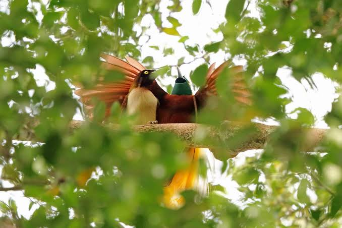

Bird-of-paradise
Birds
The birds-of-paradise are members of the family Paradisaeidae of the order Passeriformes. The majority of species are found in New Guinea and eastern Australia. The family has 42 species in 15 genera.
Family: Paradisaeidae; Vigors, 1825
Scientific name: Paradisaeidae
Kingdom: Animalia
Mass: Greater bird-of-paradise: 170 g Encyclopedia of Life
Class: Aves
Order: Passerine
The birds-of-paradise are members of the family Paradisaeidae of the order Passeriformes. The majority of species are found in New Guinea and eastern Australia. The family has 42 species in 15 genera.
The members of this family are perhaps best known for the plumage of the males of the sexually dimorphic species (the majority), in particular the highly elongated and elaborate feathers extending from the beak, wings, tail or head.
For the most part they are confined to dense rainforest habitat. The diet of all species is dominated by fruit and to a lesser extent arthropods. The birds-of-paradise have a variety of breeding systems, ranging from monogamy to lek-type polygamy.
Biology of Paradise Bird
Habitat and distribution
The centre of bird-of-paradise diversity is the large island of New Guinea; all but two genera are found in New Guinea. The two that are not are the monotypic genera Lycocorax and Semioptera, both of which are endemic to the Maluku Islands, to the west of New Guinea.
Of the riflebirds in the genus Ptiloris, two are endemic to the coastal forests of eastern Australia, one occurs in both Australia and New Guinea, and one is only found in New Guinea.
The only other genus to have a species outside New Guinea is Phonygammus, one representative of which is found in the extreme north of Queensland. The remaining species are restricted to New Guinea and some of the surrounding islands.
Many species have highly restricted ranges, particularly a number of species with restricted habitat types such as mid-montane forest (like the black sicklebill) or island endemics (like the Wilson's bird-of-paradise).
Diet and feeding
The diet of the birds-of-paradise is dominated by fruit and arthropods, although small amounts of nectar and small vertebrates may also be taken.
The ratio of the two food types varies by species, with fruit predominating in some species, and arthropods dominating the diet in others. The ratio of the two will affect other aspects of the behaviour of the species, for example frugivorous species tend
to feed in the forest canopy, whereas insectivores may feed lower down in the middle storey. Frugivores are more social than the insectivores, which are more solitary and territorial.
Even the birds-of-paradise that are primarily insect eaters will still take large amounts of fruit; and the family is overall an important seed disperser for the forests of New Guinea, as they do not digest the seeds.
Species that feed on fruit will range widely searching for fruit, and while they may join other fruit eating species at a fruiting tree they will not associate with them otherwise and will not stay with other species long.
Fruit are eaten while perched and not from the air, and birds-of-paradise are able to use their feet as tools to manipulate and hold their food, allowing them to extract certain capsular fruit.
Breeding
Most species have elaborate mating rituals, with birds in the genus Paradisaea using a lek-type mating system. Others, such as the Cicinnurus and Parotia species, have highly ritualised mating dances.
Across the family (Paradisaeidae), female preference is incredibly important in shaping the courtship behaviors of males and, in fact, drives the evolution of ornamental combinations of sound, color, and behavior.
Males are polygamous in the sexually dimorphic species, but monogamous in at least some of the monomorphic species. Hybridisation is frequent in these birds, suggesting the polygamous species of bird of paradise are very closely related despite being in different genera.
Many hybrids have been described as new species, and doubt remains regarding whether some forms, such as Rothschild's lobe-billed bird of paradise, are valid.[citation needed]
Birds-of-paradise build their nests from soft materials, such as leaves, ferns, and vine tendrils, typically placed in a tree fork. The typical number of eggs in each clutch varies among the species and is not known for every species.
For larger species, it is almost always just one egg, but smaller species may produce clutches of 2–3 eggs. Eggs hatch after 16–22 days, and the young leave the nest at between 16 and 30 days of age.
Birdwatching
In recent years the availability of pictures and videos about birds of paradise in the internet has raised interest of birdwatchers around the world.
A lot of them fly to West Papua to watch various species of birds of paradise from Wilson's Bird of Paradise (Diphyllodes respublica) and Red Bird of Paradise (Paradisaea rubra) in Raja Ampat to Lesser Birds of Paradise (Paradisaea minor), Magnificent
Riflebird (Ptiloris magnificus), King Bird of Paradise (Cicinnurus regius), and Magnificent Bird of Paradise (Diphyllodes magnificus) in Susnguakti forest.
This activity significantly reduces the number of local villagers who are involved in the hunting of paradise birds.
Hunting
Hunting of birds of paradise has occurred for a long time, possibly since the beginning of human settlement. It is a peculiarity that among the most frequently-hunted species, males start mating opportunistically even before they grow their ornamental plumage.
This may be an adaptation maintaining population levels in the face of hunting pressures, which have probably been present for hundreds of years.[citation needed]
The naturalist, explorer and author Alfred Russel Wallace spent six years in what was then called The Malay Archipelago (published 1869), shooting, collecting and describing many specimens of animals and birds including the great, king, twelve-wired, superb, red and six-shafted birds of paradise.
Hunting to provide plumes for the millinery trade was extensive in the late 19th and early 20th century, but today the birds enjoy legal protection and hunting is only permitted at a sustainable level to fulfill the ceremonial needs of the local tribal population. In the case of Pteridophora plumes, scavenging from old bowerbird bowers is encouraged.